ITALY, DUE STAMPS
Return To Catalogue -
Italy
Note: on my website many of the
pictures can not be seen! They are of course present in the
catalogue;
contact me if you want to purchase the catalogue.
1863 Inscription "SEGNA TASSA" in an ellipse
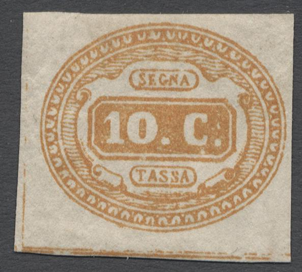

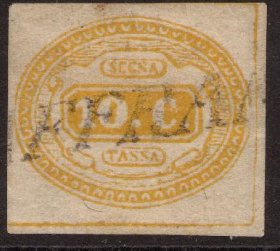
First image certified genuine by Raybaudi. Second stamp certified
genuine (by Dieter Newiger). The last stamp might be a forgery.
There are single or double guidelines between the stamps, that
partly or entirely disappeared in the later prints due to wear.
10 c brown to yellow
Value of the
stamps
|
vc = very common
c = common
* = not so common
** = uncommon
|
*** = very uncommon
R = rare
RR = very rare
RRR = extremely rare
|
| Value |
Unused |
Used |
Remarks |
| 10 c |
*** |
- |
Usually uncancelled |
Usually these stamps are uncancelled, since the
postoffice reckoned that they could not be reused anyway by the
public. Nevertheless cancelled ones exist (although most of the
cancelled stamps are forgeries), especially from the towns of
Rieti and Spoleto. Example:
(with "RIETI" cancel)
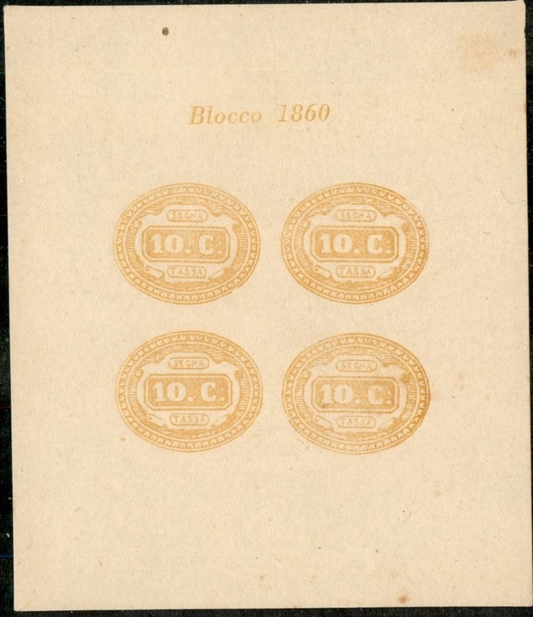
Some kind of reprint in a block of 4 stamps, with inscription
"Blocco 1860" on top
Proofs or printer's waste in black (on top of proofs in yellow).
I've seen more of such proofs in black.
Forgeries of this stamp exist. Genuine stamps have 50 beads
(although some forgeries also have 50 beads, other forgeries have
49 or 51 beads). Also a forged cancel "RIETI 21 LUG 63"
is mentioned in the Serrane Guide.

Most likely a forged "RIETI 21 LUG 63" cancel.
With "MELFI" cancel and a numeral cancel.
Forgery with 51 beads in the outer ellipse, genuine stamps also
have a shorter right hand side of the letter "N" when
compared to the left hand side. There appear to be more wavy
lines on top of the stamp than in the genuine stamp? There are
three dots behind the "C". The distance of the scroll
below the "1" to the outer circle is larger than in the
genuine stamps.
The 'Almanach du Timbre-Poste' of J.B.Moens (1886) states that
a certain stamp dealer G.Crecchi of Livorno sold forgeries of
these stamps by the thousands.
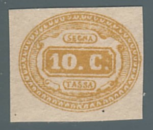
Modern forgery, it has a dent in the corner just to the upper
right of the "C".
I don't know who made the above modern forgery,
but it is often offered together with other Italy States modern forgeries.
More information on this stamp and its forgeries
can be found on:
http://www.webalice.it/audinoi/Il_Segnatasse_da_10_cent_del_1863.html
(in Italian).
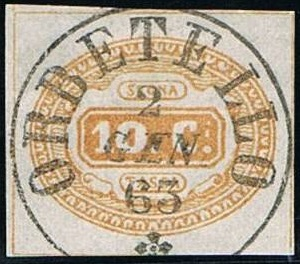
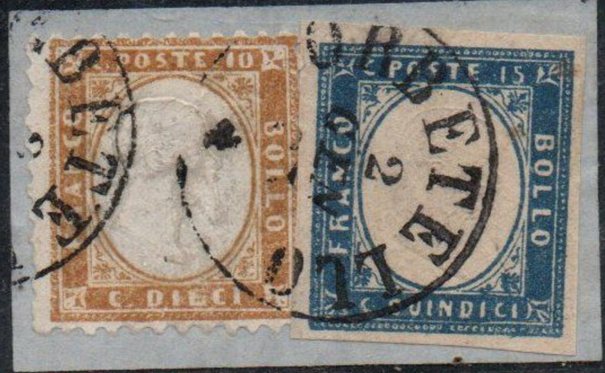
Some forgeries with exactly the same cancel "ORBETELLO 2 GEN
63" as shown on the above mentioned site. There is an extra
dot behind the "C" (3 instead of 2). This might be the
forgery made by forger "I." (Imperato?) from Genoa
mentioned in the Serrane guide. It might originally have been
made by Oneglia. This cancel was also used on other stamps, such
as these of early Italy (see last image).
A "DA ANCONA A BOLOGNA 12 APR. 60 (1)" cancel
presumably from Oneglia as well.
Most likely a forgery, note the clear ":" behind the
"C".
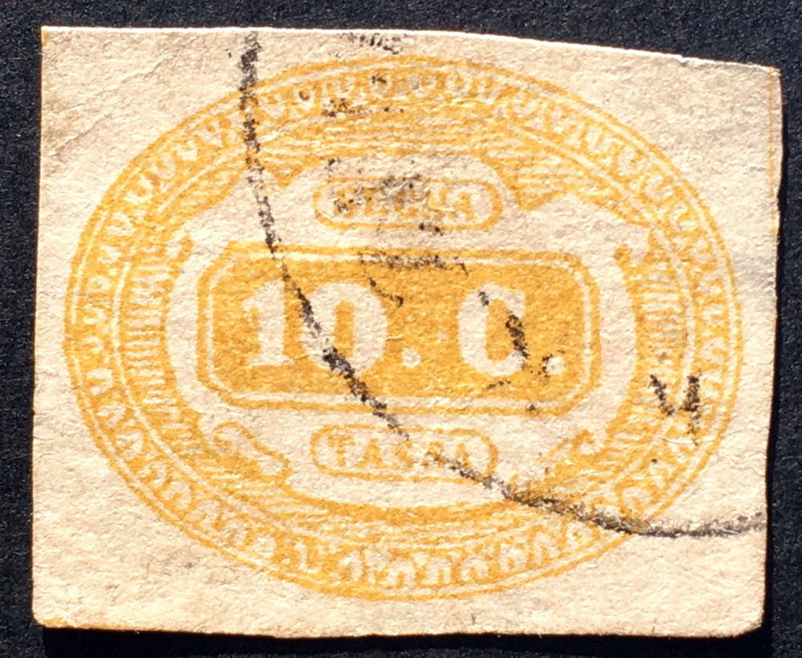
Other dubious stamps.... It looks like these stamps have a "K.K. ZEITUNGS" cancel"?
There is only one dot behind the "C". The top of the
"C" is slanting downwards. There are some smudgy areas
in the outer ornaments below the "T" of
"TASSA".
Fournier cancels, reduced sizes "POLA 20/5",
"VENEZIA 25 GEN", "MILANO 2-3 52" and
"PIACENZA 6 OTT 57". I've seen the Piacenza cancel on a
forged Italian postage due stamp of 1863.
Forgery with the above forged cancel "PIACENZA 6 OTT
57" cancel
Two forgeries with the same forged "CODIGORO 27 GIU. 63
FERRARA" cancel. Note the same defects in both forgeries,
such as the break above the "S" of "SEGNA"
and the break in the ornament below the "1". They also
exist with a numeral cancel "2".
1869 Inscription "SEGNA TASSA"
10 c orange
This stamp has watermark 'Crown' and perforation 14.
Value of the
stamps
|
vc = very common
c = common
* = not so common
** = uncommon
|
*** = very uncommon
R = rare
RR = very rare
RRR = extremely rare
|
| Value |
Unused |
Used |
Remarks |
| 10 c |
RR |
R |
|
1870 Inscription "SEGNATASSE",
value in other colour
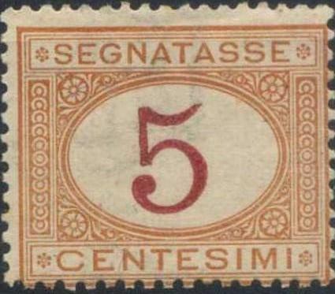
1 c orange and red
2 c orange and red
5 c orange and red
10 c orange and red
20 c orange and red (1894)
30 c orange and red
40 c orange and red
50 c orange and red
60 c orange and red
60 c orange and brown (1926)
1 L blue and brown
1 L blue and red (1894)
2 L blue and brown
2 L blue and red (1894)
5 L blue and brown
5 L blue and red (1894)
10 L blue and brown
10 L blue and red (1894)
These stamps have watermark 'Crown' and perforation 14. The
values 2 c olive, 3 c brown, 6 c green, and 30 c lilac (in
different colours than the postage due stamps) are provisional
fiscal stamps issued in 1908:
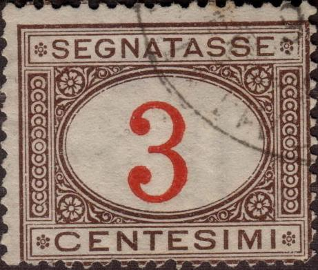
Value of the
stamps
|
vc = very common
c = common
* = not so common
** = uncommon
|
*** = very uncommon
R = rare
RR = very rare
RRR = extremely rare
|
| Value |
Unused |
Used |
Remarks |
| 1 c |
* |
* |
|
| 2 c |
* |
* |
|
| 5 c |
c |
vc |
|
| 10 c |
c |
vc |
|
| 20 c |
c |
c |
|
| 30 c |
c |
vc |
|
| 40 c |
* |
c |
|
| 50 c |
* |
c |
|
| 60 c orange and red |
* |
c |
|
| 60 c orange and brown |
* |
c |
1925 |
| 1 L blue and brown |
RR |
* |
|
| 1 L blue and red |
* |
c |
|
| 2 L blue and brown |
RR |
* |
|
| 2 L blue and red |
* |
c |
|
| 5 L blue and brown |
*** |
* |
|
| 5 L blue and red |
*** |
c |
|
| 10 L blue and brown |
RR |
** |
|
| 10 L blue and red |
*** |
c |
|
Surcharged (1890)
'10' on 2 c orange and red
'20' on 1 c orange and red
'30' on 2 c orange and red
Value of the
stamps
|
vc = very common
c = common
* = not so common
** = uncommon
|
*** = very uncommon
R = rare
RR = very rare
RRR = extremely rare
|
| Value |
Unused |
Used |
Remarks |
| 10 c on 2 c |
R |
** |
|
| 20 c on 1 c |
R |
* |
|
| 30 c on 2 c |
R |
* |
|
(Inverted value, reduced size)
For the specialist: inverted value imprint exists for most of
the non-surcharged stamps. The values 5 c, 10 c and 60 c were
reprinted with inverted centers in 1920 in whole sheets. Forged
inverted centers exists by bleaching out the central value and
reprinting it upside down. The surcharged stamps also exist with
inverted surcharge (except the '10' on 2 c).
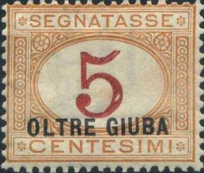
These stamps exist with overprint "Libia" and
"Colonia Eritrea" to be used in Libya
and Eritrea. They also exist with
overprint "Somalia Italiana Meridionale" and
"Somalia Italiana". Some values with black value
inscription also exist with overprint "Somalia
Italiana". Some postage due stamps were also overprinted
"OLTRE GIUBA" to be used in Oltre
Giuba.
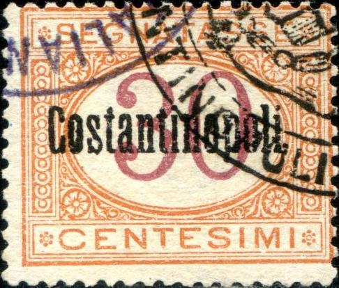
The overprint "Costantinopoli" was used for the Italian post offices in Turkey
Overprints "Pechino" and "Tientsin" for the Italian post offices in China
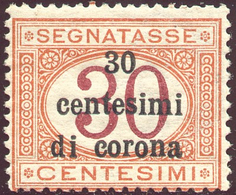
Some overprints for 'Venezia Giulia'
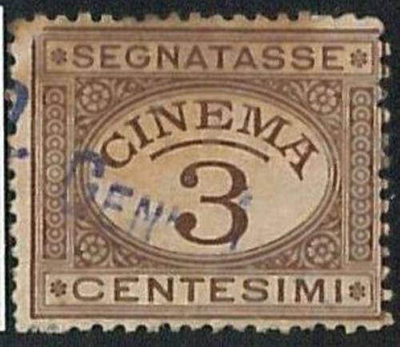
Another fiscal stamp in the same design as the postage due
stamps, but with "CINEMA" printed in the center.
Probably issued somewhere after 1910?
Forgeries exist of these stamps made by Spiro:
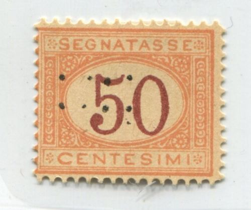
The easiest way to recognize them is by their
strange cancels and the absence of watermark (there should be a
crown watermark). Spiro forgeries were printed in sheets of 25
(5x5):
Some other forgeries with very bad lettering:
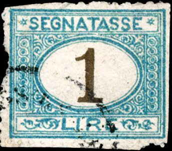
I've seen the 1 L forgery with a cancel consisting of 4
concentric rings.
Reduced sizes
Forgeries with a ring cancel and with a "ZEITUNGS"
cancel?
A sheet with these forgeries, apparently different values were
printed on the same sheet.
The 'Almanach du Timbre-Poste' of J.B.Moens
(1886) states that a certain stamp dealer G.Crecchi of Livorno
sold forgeries of these following values 20, 30, 40, 50 ,60
Centesimi (also of the 1863 issue, actually Moens says 'Lire' not
'Centesimi', I'm not sure if this is some kind of joke).
Fournier forged overprints, image taken from a 'Fournier Album of
Philatelic Forgeries' (reduced size)

1884 Larger stamps, inscription
"SEGNATASSE"
50 L green
50 L yellow (1903)
100 L red
100 L blue (1903)
These stamps have watermark 'Crown' and perforation 14.
Value of the
stamps
|
vc = very common
c = common
* = not so common
** = uncommon
|
*** = very uncommon
R = rare
RR = very rare
RRR = extremely rare
|
| Value |
Unused |
Used |
Remarks |
| 50 L green |
*** |
*** |
|
| 50 L yellow |
*** |
* |
|
| 100 L red |
*** |
*** |
|
| 100 L blue |
*** |
* |
|
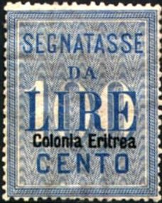
The 50 L yellow and 100 L blue exist with overprint 'Colonia
Eritrea' to be used in Eritrea
1934 New design (arms), inscription
"SEGNATASSE"
With fasces
Without fasces
5 c brown
10 c blue
20 c red
25 c green
30 c orange
40 c black
50 c violet
60 c blue
Slightly different design
1 L orange
2 L green
5 L violet
10 L blue
20 L red
The whole set was re-issued in 1945 without fasces besides the
cross.
Overprint for the Italian socialist
republic (axe) and with further overprint 'Florence welcomes
the allies 1- 8 -1944' for the Italian
socialist republic
The above stamps overprinted with "mPHA
GOPA" were issued for the Italian
occupation of Montenegro. The overprint
"ISOLE JONIE" was used for the Ionian
Islands. These stamps also exist with overprint "ERITREA", "LIBIA" and
"SOMALIA ITALIANA". These stamps with overprint "Deutsche
Besetzung Zara" (vertically) and "ZARA"
(between horizontal lines) were issued for Zara. Stamps with overprint
"A.O.I." were used in the Italian
colonies in Africa.
Zara overprint and "A.O.I." overprint for the Italian
colonies in Africa
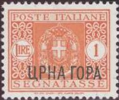
Example of stamp used in Montenegro with
"mPHA GOPA"
overprint
The values 1 L orange, 5 L violet, 10 L blue and
20 L red (all without fasces) exist with overprint "A.M.G.
F.T.T." (issued for Trieste).
'A.M.G. F.T.T' overprint for Trieste
The following values exist with an eagle and
"LAIBACH" overprint (for
Ljubljana) some overprints in the same color as the stamps:
20 c, 25 c, 30 c on 50 c, 40 c on 5 c, 50 c, 1 L, 2 L, 5 L on 5 c
and 10 L.
1947 Inscription "POSTE
ITALIANE SEGNATASSE", value in center surrounded by
ornaments
1 L orange
2 L green
3 L red
4 L olive
5 L violet
6 L blue
8 L violet
10 L blue
12 L light brown
20 L lilac
25 L red
30 L grey
40 L olive
50 L light blue
100 L light brown
500 L blue and red
900 L red and light blue
1500 L brown and orange
All values exits with overprint "A.M.G.
F.T.T." or "AMG-FTT" (Trieste).
"A.M.G. F.T.T." and "AMG-FTT" overprints for Trieste.
Copyright by Evert Klaseboer


{kind=link}
{kind=link}
{kind=link}
{kind=link}
{kind=link}
{kind=link}
{kind=link}
{kind=link}
{kind=link}
{kind=link}
{kind=link}
{kind=link}
{kind=link}
{kind=link}